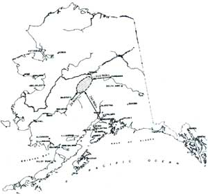

Issue # 73- January/February 1982
There's land for the hearty... and the price is right!
ILLUSTRATION COURTESY OF BUREAU OF LAND MANAGEMENT
Recently, one of our readers informed us that the Bureau of Land Management (an agency of the Department of the Interior) was planning to open up a large tract of Alaskan land under a homesteading-type program. "Please tell folks that there's free land to be had by those with the guts to take it," urged the writer.
Well, friends, "guts" is the key word in that last sentence. During December 1981 the BLM was to have made available 10,000 acres in the heart of Alaska, in an effort to encourage people to establish their homes and businesses in the sparsely populated forty-ninth state. However, the land is pretty rugged . . . and it would take a person with well-honed survival and homesteading skills to make a successful go on his or her claim. The land isn't entirely free, either... it will cost a reasonable $2.50 an acre to those who successfully fulfill the settlement requirements and pay the filing fees necessary to obtain legal ownership of the tract.
MOM asked a BLM representative what kind of environment a would-be pioneer might face. "The land is extremely isolated, with minimal tree coverage, and there's no road access," the spokesperson replied. "The settler would have to have resources of considerable size to fly in-or barge in-food and fuel supplies. Also, since the acreage is in the state's interior, there's not much water and there are negative temperatures much of the year. It'd take a lot of effort."
Yet in spite of the territory's drawbacks, the Alaska Settlement Program does offer an experienced homesteader a very attractive opportunity to obtain land for little more than sweat equity. And if there's enough public interest in this initial offering, the BLM may open up other large Alaskan tracts in a similar manner.
Here's a little general information on the property that's currently available: The acreage is located north of Lake Minchumina (the northern portions can be reached by riverboat along the Kantishna River). Three types of claims may be made: homesite, headquarters (generally used for big-game guiding and trapping operations), and trade and manufacturing (these claims may be used for businesses such as roadhouses, lodges and recreation cabins, the production of handcrafts for sale, and so forth). The maximum size of the homesite and headquarters-site claims is five acres ... while business claims may run as large as 80 acres. The residency and/or improvement requirements for each of the three types of claims vary, but in each case the land will cost $2.50 an acre, once an applicant has met the necessary criteria.
If you'd like more details on this program, you can request a brochure called "Settlement in Alaska", as well as more information on the kind of claim you're most interested in, from the Bureau of Land Management, Alaska State Office, Dept. TMEN, Anchorage Federal Building, 701 C Street, Box 13, Anchorage, Alaska 99513.
EDITOR'S NOTE: Apparently it can be done . . . the authors of the article about skijoring (page 58) live near Lake Minchumina.
|
 |
|
|